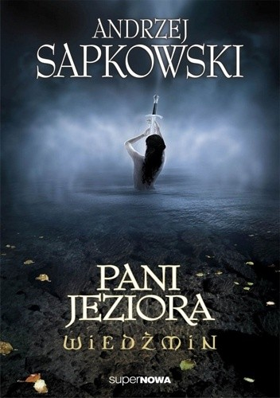

<div class="col-8 offset-2 bg-dark-gray">
  <div class="row p-5">
    <div class="col-4"></div>
    <div class="col-8 my-5 ">
      <div class="text-center">
        <h1>Andrzej Sapkowski</h1>
        <h1>Wiedźmin Pani Jeziora</h1>
      </div>
      <div class="m-5">
          <h1>31,04zł</h1>
          <h1 class="text-right">Do koszyka</h1>
      </div>
    </div>
    <div class="col-12 mt-5">
        <h1>Notka</h1>
        <p>Ciri wpatruje się w wypukły relief przedstawiający ogromnego węża. Gad, zwinąwszy się w kształt ósemki, wgryzł się zębiskami we własny ogon. To pradawny wąż Uroboros. Symbolizuje nieskończoność i sam jest nieskończonością. Jest wiecznym odchodzeniem i wiecznym powracaniem. Jest czymś, co nie ma ani początku, ani końca.
            A to, że Uroboros gryzie swój ogon, oznacza, że koło jest zamknięte.</p>
    </div>
  </div>
</div>
